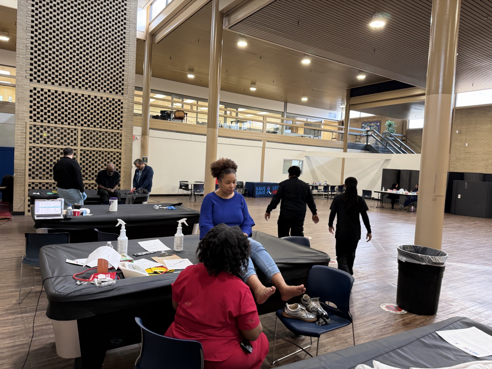
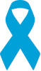
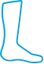
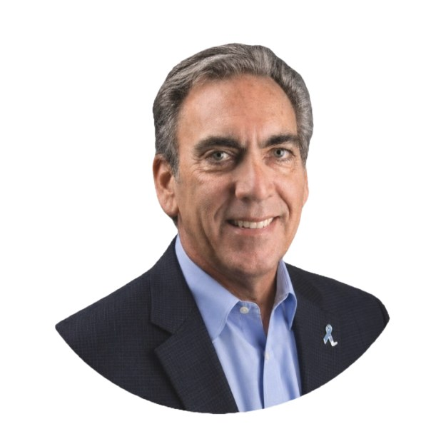

We exist to keep limbs, and lives, intact.
Most lower-limb amputations are not inevitable. They are the end of a chain of missed chances, and every link in that chain can be broken.

Fewer amputations. Better lives.
The Save A Leg, Save A Life Foundation works to reduce the number of lower extremity amputations and improve the quality of life of people living with wounds and complications from diabetes and peripheral arterial disease.
Evidence shows that up to 85% of lower-limb amputations are preventable with early detection and timely, evidence-based care.1 That number is our whole reason for existing: it means the outcome is almost always still open, if the right person looks in time.
1. World Health Organization and International Diabetes Federation, on diabetes-related lower-limb amputations.
Educate. Advocate. Communicate.
Three pillars carry the work. Each one turns a preventable amputation into a preserved limb.

Educate
We equip the public and healthcare professionals with evidence-based ways to prevent or delay amputations, before a wound ever becomes a decision.
Explore the Learning Center ›
Advocate
We stand up for people who have had amputations and populations at increased risk, and help write prevention into policy and law.
See our advocacy work ›Communicate
We strengthen communication among the clinicians who treat at-risk patients, so referrals happen early, when they still change the outcome.
How we help ›Prevention through action, not words.
Educating patients, caregivers, and clinicians on prevention and advocacy is an essential part of our efforts. For positive change to be effective, empowering high-risk patient populations as well as health care professionals requires more than awareness of the many issues that can lead to often preventable lower extremity amputation. Our strategy is a proactive, multi-tiered approach that focuses on involvement at the personal and community level, while not accepting the status quo that amputation is a preferred solution. Amputation often creates more problems than it solves, and changing perceptions and attitudes is a challenge we have accepted.
A country where no one loses a limb that evidence could have saved.
We work to modernize hospital policy on amputation, educate practitioners in advanced evidence-based methods, and empower patients to advocate for themselves, through community outreach, philanthropy, and relentless patient advocacy.
History of the Foundation
The Save A Leg, Save A Life Foundation was incorporated in 2015 by Dr. Desmond Bell. Dr. Bell practiced as a wound care specialist and saw many of the needs that people with non-healing wounds face, including often unnecessary amputation.
Knowing that improvements in technology make preventing amputations achievable, Dr. Bell found that most patients and their caregivers are unaware of the resources available that make limb preservation possible.
This 501(c)(3) organization once had various regional chapters; the structure was recently reorganized to allow better focus on the primary mission. To complement this clearer focus, our brand has been reimagined to echo the greater impact we must achieve.
The Foundation's leaders are a group of dedicated practitioners, specialists, and advocates volunteering their time to carry out the work. We rely on a network of sponsors, donors, providers, and members to fulfill the potential of saving limbs and lives.

Dr. Desmond Bell, Founder